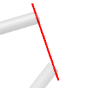
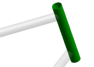
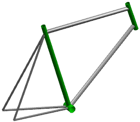

Create the expressions
-
Choose Insert→Sweep→Tube.
-
In the Tube dialog box, click the Reset
 button.
button.
-
Select the center line.

-
In the Cross Section group, set:
-
Outer Diameter = IPE_tube_od
-
Inner Diameter = IPE_tube_id
-
-
In the Preview group, select Show Result .
A preview of the tube is displayed.

-
Click OK.
The tube is created.
-
Make the assembly file the Work Part.

-
Close all parts without saving.